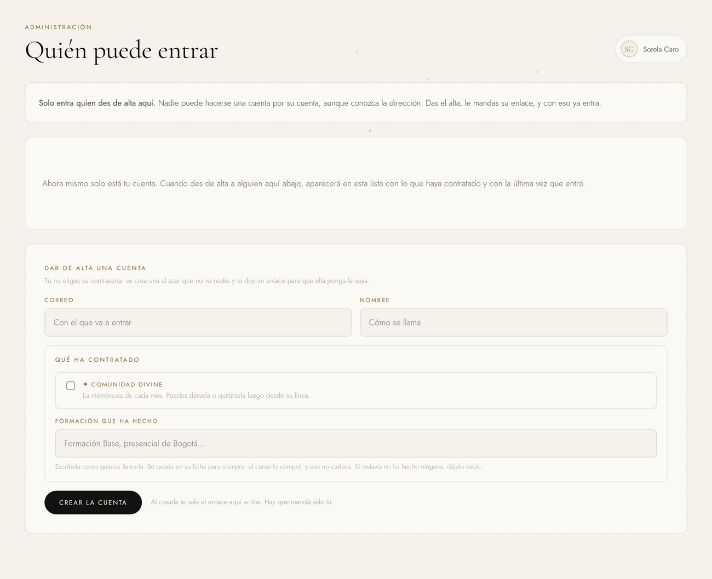
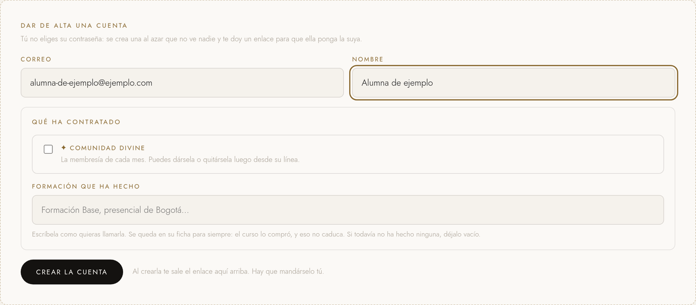
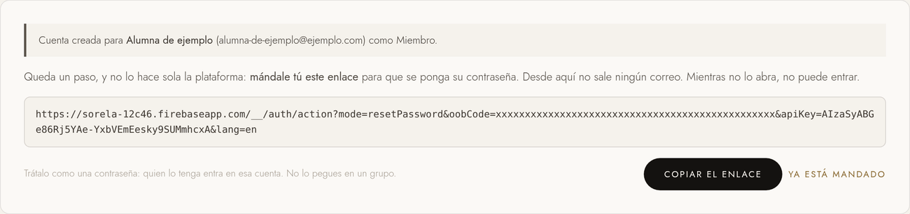
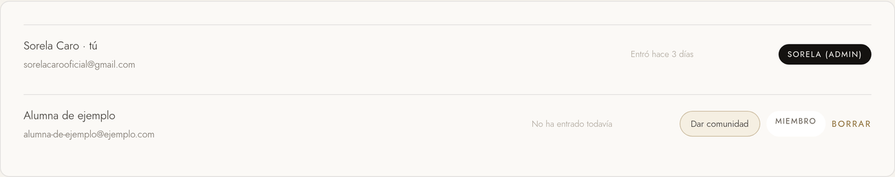

Cómo crear una cuenta desde tu plataforma, qué le llega a esa persona y qué tienes que
hacer tú para que pueda entrar.
sorelacarodivine.comDocumento 1 de 2
Antes de empezar
Nadie puede entrar si tú no lo das de alta.
La plataforma no tiene registro abierto. Aunque alguien conozca la dirección, no puede
hacerse una cuenta por su cuenta: la única forma de entrar es que tú le des el alta desde
aquí. Esta pantalla es, literalmente, la puerta.
Son dos cosas y las dos hacen falta: tú creas la cuenta y
tú le mandas el enlace. Si haces solo la primera, esa persona todavía no
puede entrar.
El paso a paso
Cinco minutos, una sola vez por persona.
Entra en Cuentas
Es la última línea del menú de la izquierda, debajo de Comunidad.
La pantalla se llama Quién puede entrar. Arriba verás la lista de quien ya
tiene cuenta, y abajo el formulario para dar de alta a alguien nuevo.

La pantalla entera. El aviso de arriba, la lista de quien ya tiene cuenta y,
al final, el formulario.
Rellena el correo y el nombre
Correo: el correo con el que esa persona va a entrar. Escríbelo bien,
porque no se puede cambiar después: es su identidad dentro de la plataforma.
Nombre: cómo se llama. Es lo que verás tú en la lista.

El formulario. El correo, el nombre y lo que ha contratado.
Marca qué ha contratado
Debajo, en Qué ha contratado, es donde de verdad se decide
qué va a ver esa persona al entrar. Son dos cosas y no se excluyen:
Comunidad Divine: la membresía de cada mes. Se la puedes dar o quitar
cuando quieras desde su línea de la lista, sin tocar nada más.
Formación que ha hecho: escríbela como quieras llamarla —«Formación
Base», «presencial de Bogotá»—. Se queda en su ficha para siempre: el curso lo compró, y
eso no caduca. Si todavía no ha hecho ninguna, déjalo vacío.
Por qué importa escribirlo igual
Las clases del aula se suben diciendo a qué curso pertenecen. Si aquí pones
«Formación Base» y en la clase pones «formacion base», la plataforma entiende que es
el mismo curso —no mira ni tildes ni mayúsculas—, pero conviene escribirlo igual: es
lo que verá ella como título de su bloque de clases.
Pulsa «Crear la cuenta»
La cuenta se crea al momento. Tú no eliges su contraseña y no la vas a
ver: el sistema pone una larga al azar que no conoce nadie, ni siquiera tú, y la persona
se pondrá la suya.
Esto es a propósito. Una contraseña que dictas por WhatsApp acaba siendo la misma para
las doce alumnas del curso y se queda escrita en una conversación que no se borra nunca.
Copia el enlace que aparece
Justo arriba te sale un recuadro con un enlace muy largo y el botón
Copiar el enlace. Ese enlace es lo que le falta a esa
persona para poder entrar.

Esto es lo que sale al crearla. El enlace de la captura está tapado a
propósito: el de verdad es la llave de esa cuenta.
Mándaselo tú
Por WhatsApp, por correo, por donde habléis. La plataforma no se lo manda:
desde aquí no sale ningún correo automático, y si no se lo mandas tú, esa persona se
queda con una cuenta que no puede abrir.
Cuando ya lo hayas mandado, pulsa Ya está mandado y el
recuadro se cierra.
Trátalo como una contraseña
Quien tenga ese enlace puede entrar en esa cuenta, sea quien sea. No lo pegues en un grupo
ni en un sitio donde lo vea más gente: mándaselo a esa persona y a nadie más.
Si el enlace no aparece. A veces la cuenta se crea bien pero el enlace no
llega a salir. No pasa nada y no hay que repetir el alta: dile a esa persona que entre en
sorelacarodivine.com/entrar, pulse
He olvidado mi contraseña y escriba su correo. Recibe lo
mismo.
Qué ve la otra persona
Lo que pasa al otro lado.
Cuando abra el enlace que le has mandado, ve una pantalla de Google pidiéndole que escriba
una contraseña nueva. La elige ella, la conoce solo ella, y tú no la ves nunca.
Esta es la pantalla donde entrará. La misma que usas tú:
sorelacarodivine.com/entrar.
A partir de ahí entra en sorelacarodivine.com/entrar con su correo y esa
contraseña. En tu lista de Cuentas dejará de poner
No ha entrado todavía y pasará a decirte cuándo entró.
Ojo con esto
Dar de alta una cuenta no le manda a nadie la información de la Técnica
Divine ni el PDF. Ese correo sale por otro sitio: cuando apuntas a alguien en
Clientes. Aquí solo se da acceso.
Qué ve cada una
Tú, y todas las demás.
Dentro de la plataforma solo hay dos clases de persona: tú y el resto. Lo que ve el resto no
depende de una etiqueta, sino de lo que haya contratado.
Quién
Qué ve al entrar
Sin nada contratado
Una pantalla que dice que su espacio está en preparación y que se le avisará por
correo. Nada más: ni clases ni agenda, porque no hay nada que enseñarle todavía.
Con una formación
Mis clases, con los vídeos del curso que compró y solo de ese, y
Mi agenda, para apuntar sus sesiones con sus clientas. La agenda es
suya: tú no la ves, y ella no ve la tuya.
Con la Comunidad Divine
Lo mismo, más las clases de la comunidad, que es lo que se renueva cada mes. Si tiene
las dos cosas, ve los dos bloques.
Tú
Todo lo tuyo: tus clientes, tu agenda, tu facturación, lo que se
publica en el aula y esta misma pantalla de cuentas.

La lista, con una cuenta de ejemplo. La de arriba es la tuya: no lleva botón de
borrar. En la de abajo puedes dar o quitar la comunidad, o quitar la cuenta entera.
El acceso de administradora no se da desde aquí
No hay ningún botón para convertir a alguien en administradora, y es a propósito: eso le
daría todos tus contactos, tu facturación y el botón de borrar cuentas, y con un
desplegable de dos opciones bastaba un clic mal dado. Si algún día hace falta, se añade su
correo a la configuración del servidor. Dímelo y lo hago.
Quitar una cuenta
Se borra entera, y no vuelve.
El botón Borrar de cada línea quita la cuenta del todo: esa
persona deja de poder entrar en ese momento. No hay papelera.
Hay dos cuentas que el sistema no te deja borrar, y es a propósito:
La tuya
Te quedarías fuera de tu propia plataforma para siempre y no habría ninguna pantalla
desde la que volver a entrar.
Otra administradora
La plataforma se quedaría sin nadie que pueda dar de alta. Por eso su línea ni
siquiera enseña el botón.
Si algo sale mal
Qué significa cada mensaje.
Lo que lees
Qué ha pasado y qué hacer
Ya hay una cuenta con ese correo
Esa persona ya tiene acceso. Búscala en la lista de arriba en vez de volver a darla de
alta. Si no la ves ahí, lee la fila de abajo.
La cuenta se creó a medias
Es raro, pero si sale: quedó una cuenta con ese correo que va a impedir volver a
intentarlo. Aparece en la lista de arriba, marcada con
«puede entrar, pero no tiene ficha». Bórrala desde ahí y repite el alta.
A una administradora no se la puede borrar
Es la protección de arriba. No es un fallo.
Escribe un correo con forma de correo
Hay una errata en la dirección. Revísala y vuelve a pulsar.
Si algo no encaja con lo que ves en pantalla, la pantalla manda: este documento describe la
plataforma tal y como estaba el día que se escribió.